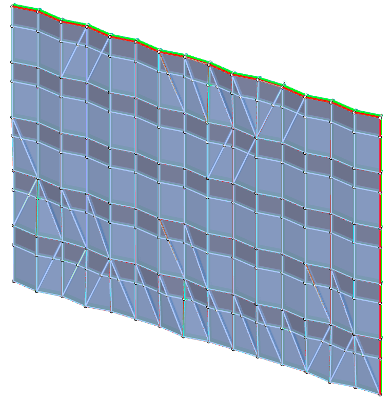
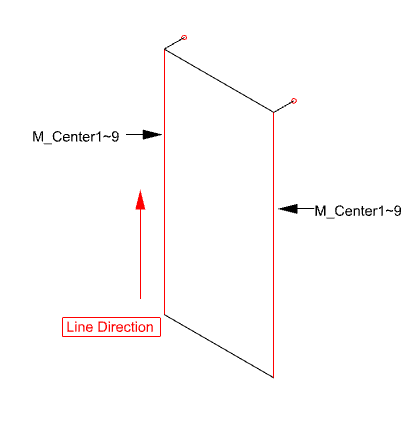
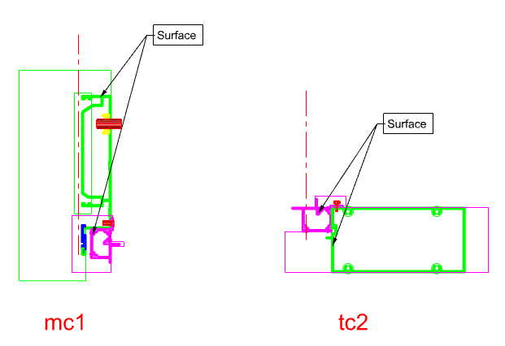
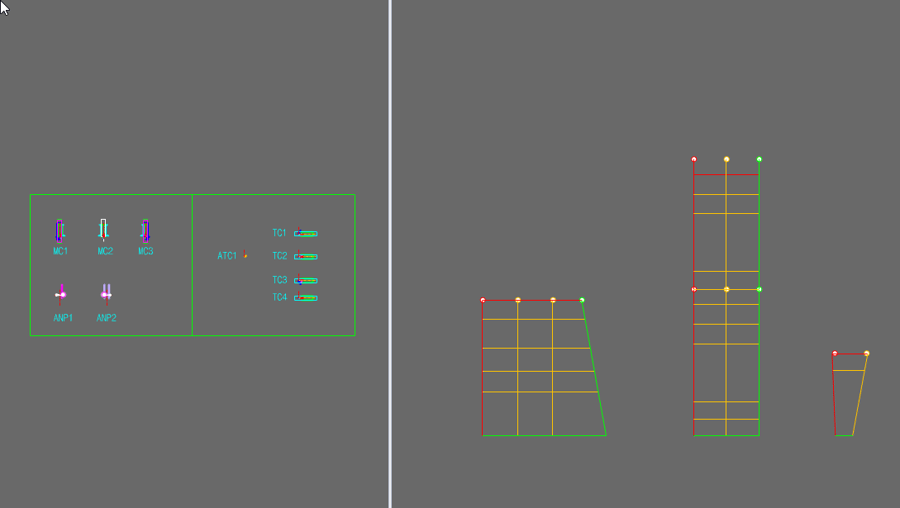
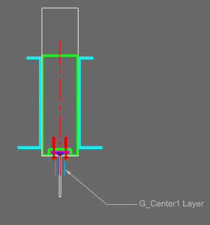
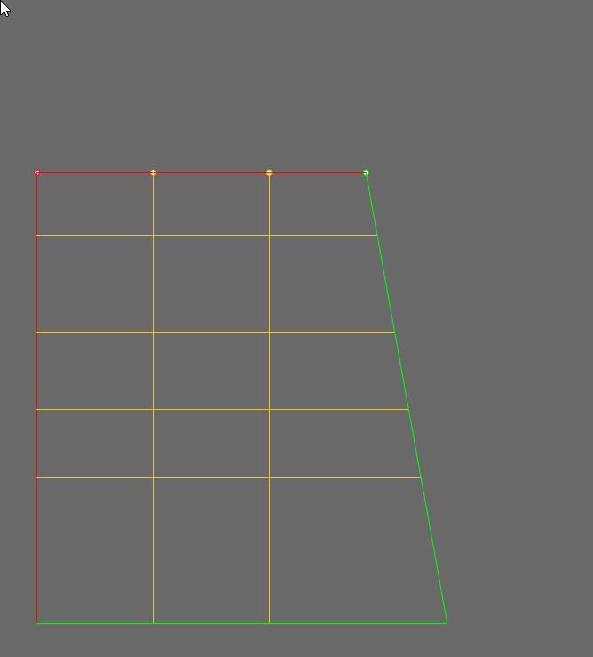
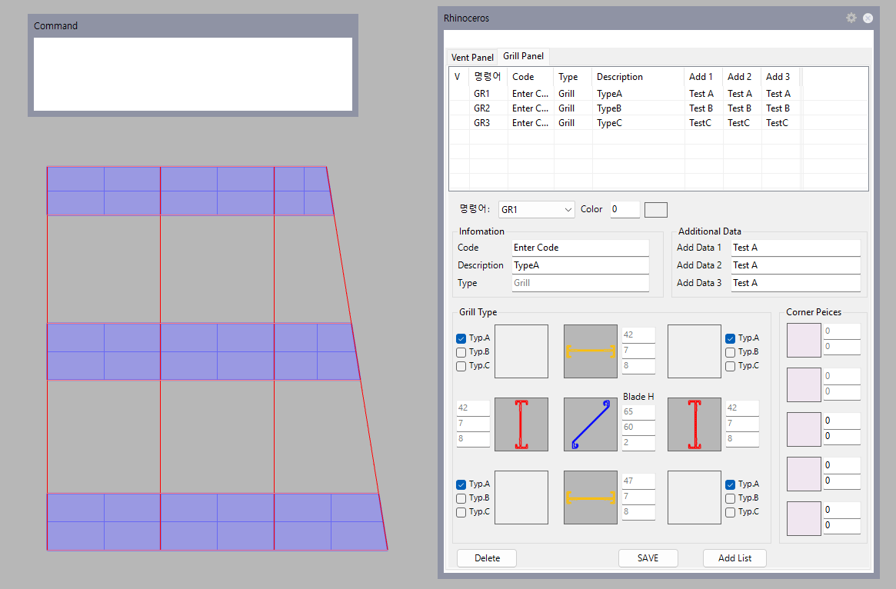
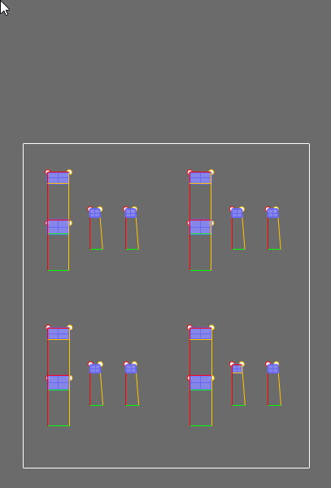
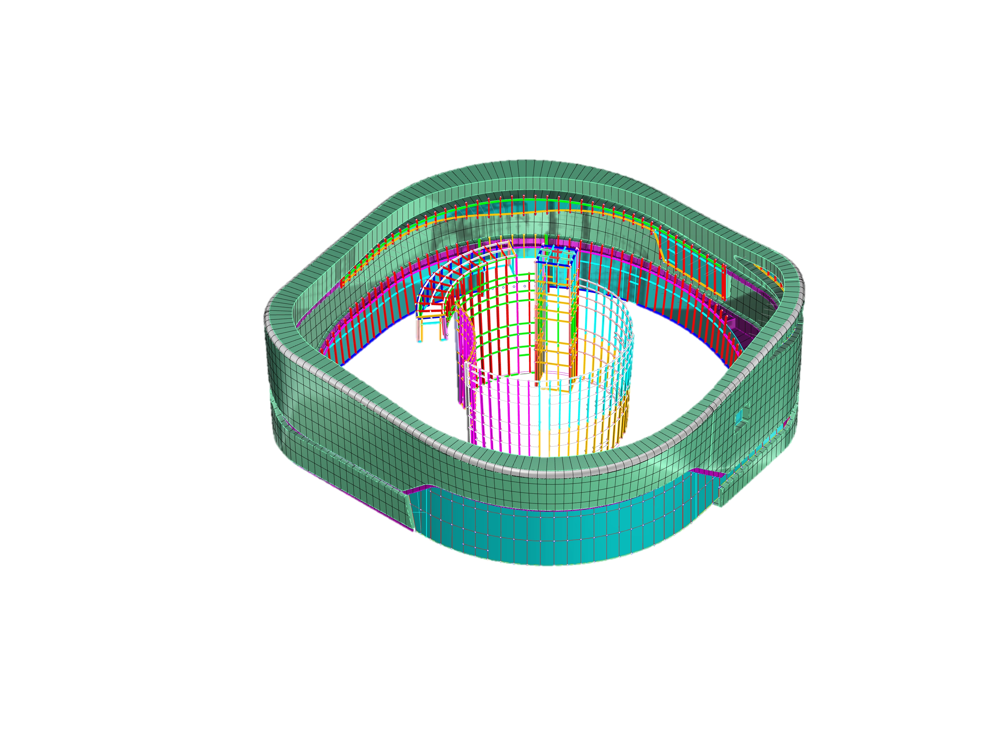

01
새로운 3D 문법보다 익숙한 설계 정보
일반 3D 명령으로 부재를 하나씩 만드는 대신 Mullion·Transom 중심선과 실제 Section을 사용합니다.
RCW V5는 Wire Frame과 실제 Section을 읽어 Mullion·Transom Frame을 Unit 단위로 자동 생성합니다. 부재를 하나씩 만드는 대신, 모델이 만들어질 기준을 준비합니다.
커튼월 설계 정보가 그대로 3D 모델의 입력이 됩니다.

Why RCW modeling
RCW는 모델링 과정을 감추지 않습니다. 커튼월 설계자가 이미 알고 있는 기준선, 단면, Unit의 관계로 바꿔 반복 작업을 컴퓨터에 맡깁니다.
일반 3D 명령으로 부재를 하나씩 만드는 대신 Mullion·Transom 중심선과 실제 Section을 사용합니다.
Profile, Block, Surface 정보를 Section에 정리하면 해당 부재가 놓이는 위치마다 같은 기준이 적용됩니다.
부재 방향, 단면 관계, Block과 Unit 구성을 3D로 확인해 다음 도면 작업 전에 문제를 찾을 수 있습니다.
Three inputs, one practical model
작업은 Wire Frame, Section, Unit 선택 순서로 진행됩니다. 각 단계의 입력과 결과가 분리되어 있어 처음 사용자도 어디를 확인해야 하는지 알 수 있습니다.
Mullion은 M_Center, Transom은 T_Center 계열로 구분합니다. 선의 시작과 끝 방향은 부재 순서와 Section 배치의 기준이 되며, WVector와 Ldir로 화면에서 확인할 수 있습니다.

Section에는 단순한 Profile 외에도 Center Line, Polyline, Surface, Block과 재료·용도·추가 길이 정보를 기록할 수 있습니다. 이 정보가 Frame Solid와 관련 Block을 만드는 기준이 됩니다.

UMD는 선택한 Unit 그룹의 기준선을 분석해 Mullion과 Transom Solid를 생성합니다. 관련 Block 배치, Bracket 재가공, 결과 그룹 정리도 같은 실행 흐름에서 처리합니다.

A connected modeling path
단계가 바뀌어도 같은 설계 정보를 다시 그리지 않습니다. 앞 단계의 결과가 다음 단계의 입력이 됩니다.
Mullion과 Transom의 위치, 순서, 진행 방향을 정합니다.
실제 Profile과 Block, Surface 정보를 기준선에 연결합니다.
Frame Solid를 생성하고 관련 객체를 Unit 단위로 정리합니다.
선택한 면에 Glass, Vent, Grill, BackPanel 타입을 적용합니다.
Complete the unit
자주 사용하는 사양을 타입으로 미리 설정하고 필요한 Face에 적용합니다. 프로젝트 안의 서로 다른 사양도 명령 번호로 빠르게 구분할 수 있습니다.

Section 기준과 설정된 두께·사양으로 선택한 Face에 Glass Solid를 만듭니다.

선택한 면을 기준으로 Left·Right·Top·Bottom Vent Frame을 그룹으로 만듭니다.

외곽 Frame과 내부 Blade를 설정된 Section과 간격에 맞춰 자동 구성합니다.

Glass Surface를 기준으로 Sheet·Panel·Insulation 구조의 Solid를 생성합니다.
From typical to complex
형태가 달라져도 기본 원리는 같습니다. Wire Frame이 위치와 방향을 정하고, Section이 실제 부재의 형상과 속성을 정합니다. RCW는 이 관계를 반복 적용해 규모가 큰 프로젝트도 같은 체계로 구성합니다.

곡면 외피, 내부 아트리움, 다수의 Unit과 Profile을 하나의 모델링 체계로 구성한 프로젝트 예시